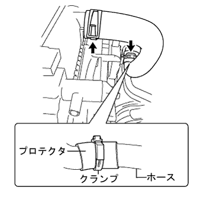
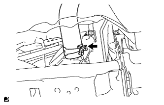
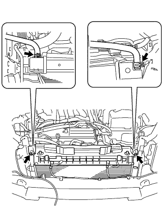
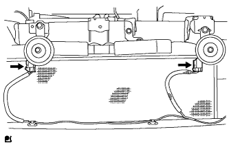
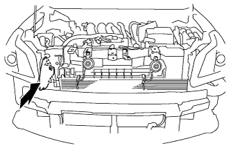

Radiator Assembly (2GR-FE) Installation |
| 1. Fan Shroud Installation |
 |
Install the fan shroud to the radiator assembly with 2 bolts.
Using the clamps, connect the 2 oil cooler hoses to the radiator assembly.
| 2. Install Radiator Assembly |
 |
Install the 2 radiator support lower cushions.
Install the radiator assembly together with the fan shroud to the vehicle.
Install the cooler condenser assembly to the fan shroud.
| 3. Connect Thermistor Assembly |
 |
Install the thermistor assembly with the clip.
| 4. Connect Wire Harness |
 |
Connect the cooling fan motor connector and 2 wire harness clamps.
| 5. Connect Oil Cooler Outlet Hose NO.1 |
 |
Using the clamp, connect the oil cooler outlet hose NO.1.
| 6. Connect Oil Cooler Inlet Hose NO.1 |
 |
Using the clamp, connect the oil cooler inlet hose NO.1.
| 7. Connect Radiator Hose NO.1 |
 |
Connect the radiator hose NO.1 with 2 clamps.
| 8. Connect Radiator Hose NO.2 |
 |
Connect radiator hose NO.2 with the clamp.
| 9. Install Fan Shroud NO.2 |
 |
Install fan shroud No.2 to the radiator assembly with the 2 bolts.
Attach the 2 horn assembly connectors to fan shroud No.2 with the 2 clamps.
| 10. Connect Water Bypass Hose |
 |
Connect water bypass hose No.1 and water bypass hose No.3 with the 2 clamps.
| 11. Install Radiator Support Assembly |
 |
Install the radiator support assembly with the 4 bolts.
 |
Connect the 2 horn assembly connectors.
| 12. Install Radiator Support Cushion |
Install the 2 radiator support cushions to fan shroud NO.2.
| 13. Install Radiator Support Upper |
Install the radiator support upper to the radiator support assembly with the bolt.
| 14. Install Hood Lock Assembly |
 |
Install the hood lock assembly with the 3 bolts.
 |
Attach the hood lock control cable assembly to the 2 clamps.
| 15. Connect Water Bypass Hose NO.2 |
 |
Install the water bypass hose to the radiator support assembly with the 2 bolts and 2 clamps.
| 16. Install Radiator Side Cover RH |
 |
Install the radiator side cover RH with the 2 clamps.
| 17. Install Radiator Side Deflector LH |
 |
Install the radiator side cover LH with the 3 clamps and guide.
| 18. Millimeter Wave Radar Sensor Bracket NO.1 Installation (w/ Cruise Control (w/ Radar Cruise)) |
 |
Temporarily install the millimeter wave radar sensor bracket with the 4 bolts.
Fully tighten the bolts in the order A, B, C, D.
| 19. Millimeter Wave Radar Sensor Assembly Installation (w/ Cruise Control (w/ Radar Cruise)) |
 |
Temporarily install the millimeter wave radar sensor assembly with the 3 bolts.
Fully tighten the bolts in the order A, B, C.
Connect the connector.
| 20. Install Front Bumper Assembly |
Connect the connectors.
 |
Engage the 8 claws (4 each on LH/RH).
 |
Install the front bumper assembly with the 5 clips, 2 bolts and 6 screws.
 |
Install the pin hold clip.
| 21. Install Radiator Grille Protector |
 |
Install the 2 radiator grille protectors.
| 22. Install Radiator Upper Air Deflector |
Install the radiator upper air deflector with the 8 clips.
| 23. Install V-bank Cover Sub-assembly |
 |
Engage the 3 clips to install the V-bank cover.
| 24. Install Engine Under Cover NO.1 |
Install the engine under cover No.1 with the 6 bolts and 7 clips.
| 25. Install Engine Under Cover |
Install the engine under cover with the 4 bolts and 4 screws.
| 26. Connect Battery Negative Terminal |
| 27. Install Battery |
Install the battery to the vehicle
Install the insulator.
 |
Connect the current sensor connector.
 |
Install the battery clamp with the bolt and nut.
Connect the battery positive terminal with the nut.
| 28. Add Coolant (Toyota Genuine Super Long Life Coolant) |
| 29. Inspect for Coolant (Toyota Genuine Super Long Life Coolant) Leaks |
| 30. Millimeter Wave Radar Sensor Assembly Adjustment (w/ Cruise Control (w/ Radar Cruise)) |
 |
Pre-adjustment Work
Unload all luggage from the vehicle.
Leave only the standard tools and spare tire in the trunk.
Adjust the tire pressure to the specified value.
Reduce the remaining fuel to less than 15L.
Vertical Adjustment
Remove dust and oil from the level shelf of the millimeter wave radar sensor assembly.
 |
Place the dedicated level in the center of the level shelf of the millimeter wave radar sensor assembly.
 |
Using a screwdriver, turn vertical adjusting bolt A of the millimeter wave radar sensor assembly to adjust so that the bubble is on the red line of the level.
| Vertical Adjustment |
| 1 turn of the screwdriver moves it approximately 0.12° |
 |
SST (Reflector) Height Adjustment
Set SST (reflector) at a height of 70cm from the ground.
SST (Reflector) Setting
Hang a pointed weight from the center (emblem center) of the front and rear bumpers of the vehicle, and accurately mark the center positions on the floor surface.
 |
Make a mark 5m ahead of the vehicle on the line connecting the 2 front and rear points.
Set SST (reflector) at a position shifted 12mm to the right of the vehicle from the marking position.

Beam Axis Adjustment
Connect SST (TaSCAN) to the vehicle.
Turn IG ON.
Turn the cruise control main switch ON.
 |
On the screen, select "Work Support" → "Radar Cruise" → "Millimeter Wave Radar Beam Axis Adjustment" in that order.
Follow the screen instructions and press the "Start" button.
Horizontal Adjustment
 |
Read the current angle deviation.
 |
Based on the beam axis deviation measurement result, use a screwdriver to turn horizontal adjusting bolt B of the millimeter wave radar sensor assembly to adjust it.
| Horizontal Adjustment |
| 1 turn of the screwdriver moves it approximately 0.05° |
 |
To reset the driving learned value, cover the left half of the sensor with aluminum foil, etc. (a metal object that blocks radio waves). (For approximately 10 seconds)
 |
Press the "Complete" button to end the beam axis adjustment mode.
Disconnect SST (TaSCAN) from the vehicle.
Recheck Vertical Adjustment
|
Place the dedicated level in the center of the level shelf of the millimeter wave radar sensor assembly.
|
Using a screwdriver, turn vertical adjusting bolt A of the millimeter wave radar sensor assembly to readjust so that the bubble is on the red line of the level.
| Vertical Adjustment |
| 1 turn of the screwdriver moves it approximately 0.12° |
| 31. Inspect Hood Sub-assembly |
| 32. Adjust Hood Sub-assembly |
| 33. Setting Procedure When Disconnecting/Reconnecting Battery Terminal |
| 34. Road Test |
Road Test
On a straight road with 1 or more lanes in each direction where safety can be confirmed and visibility is good, drive at a vehicle speed of 30km/h or more near the center of the lane, parallel to the lane.
On a straight road, when passing an oncoming vehicle with no danger of collision, check that the master warning does not illuminate, the buzzer does not sound, and "BRAKE!" is not displayed on the combination meter display.
If it is displayed, adjust the millimeter wave radar sensor assembly again.